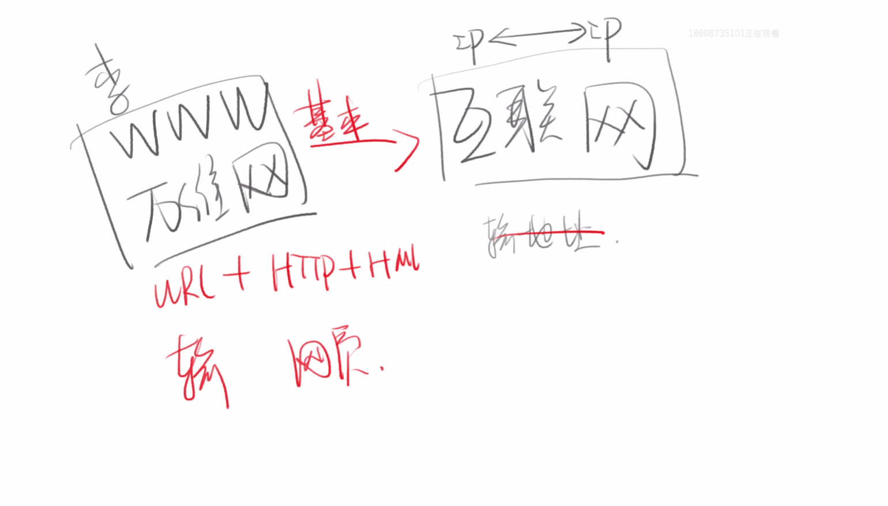

HTML的历史和学习方法
HTML历史
WWW = URL + HTTP + HTML
WWW 就是万维网 World Wide Web 中文直翻就是「像世界一样大的网」URL 就是一个网址HTTP 一种传输的协议HTML 超文本编辑语言，这里可以理解成网页
以上三样东西组成了WWW万维网
万维网和互联网是有区别的,互联网出现在万维网之前，互联网就是ip和ip是可以互联的，可以就行数据互通，比如可以发送邮件和文件。而万维网是我知道ip，在浏览器输入ip就可以打开我要看到网页，可以说万维网是基于互联网发明出来的。

HTML的学习方法
HTML全称HtyperText Markup Language 超文本编辑语言
狭义的HTML5指，新增的100多个标签及功能
广义的HTML5指，HTML5和它的朋友们（包括CSS3等）
体系化学习
1.学习一门语言必须学会什么
- 语法（代码怎么写）
- 如何调试（怎么知道自己的代码写错了）
- 在哪里查资料（其实就是为了抄代码）推荐MDN
- 标准制定者是谁 HTML的标准制定者是W3C
2.如何学(CRM学习法)
- Copy 抄代码，抄老师
- Run 放在自己的机器上运行成功
- Modify 加一点自己的想法，然后重新运行成
资料来源：饥人谷